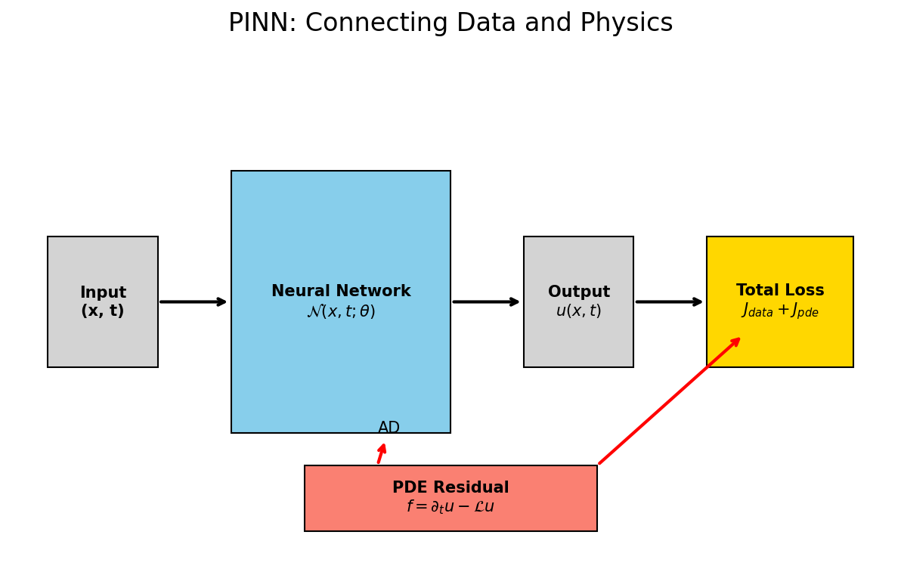

Machine Learning for Characterization and Processing
Unit 13: Physics-informed and constrained ML
AI 4 Materials / KI-Materialtechnologie
Prof. Dr. Philipp Pelz
FAU Erlangen-Nürnberg


01. Introduction & The Limits of Pure Data-Driven ML
The “Greediness” of Neural Networks
- Neural networks are “greedy”: they will learn any pattern that reduces the loss, even if it violates physics.
- Examples:
- Predicting negative mass.
- Violating the 2nd Law of Thermodynamics.
- Goal: Hard-coding physical laws into the ML architecture.
Why “Pure” ML Fails in Materials Engineering
- Data Scarcity: High-quality materials data is expensive (TEM, XRD, syncrotron).
- Extrapolation: Physics models extrapolate; data-driven models often fail outside training bounds.
- Inconsistency: Small shifts in measurements lead to wild, nonsensical predictions.
The Goal of Scientific Machine Learning (SciML)
- Combine “White-Box” (Physics) with “Black-Box” (ML).
- “Grey-Box” models: Leverage data AND physical laws.
- Benefits: Better generalization, lower data requirements, and trust.
02. Taxonomy of Bias
How can we include physical knowledge?
- Three main routes (Karniadakis et al. 2021):
- Observational Bias: Data enrichment.
- Learning Bias: Penalty-based methods (Loss function).
- Structural Bias: Designing architectures that satisfy constraints.
Observational Bias (Data Enrichment)
- Prior knowledge enters through the data themselves.
- Enriching small experimental datasets with simulations.
- Ensuring datasets reflect symmetries (rotation, reflection) or invariants.
Learning Bias (The “Soft” Constraint)
- Prior knowledge enters through the Loss Function.
- Add a “Physics-Residual” term that penalizes non-physical predictions.
- The PINN (Physics-Informed Neural Network) approach.

Structural Bias (The “Hard” Constraint)
- Prior knowledge enters through the Network Architecture itself.
- Example: Enforcing monotonicity by using non-negative weights.
- Result: The network cannot violate the constraint by design.
03. Data Enrichment & Observational Bias
Choosing the Right Preprocessing
- FFT for oscillating signals (melt pool vibrations, motor current).
- Derivatives for sharpening features (strain rates, temperature gradients).
- Functional transformations (log, exp) to linearize laws.
Case Study: Motor Current (Neuer 2024)
- Identifying “Good” vs “Bad” operating modes.
- Raw time series are noisy and high-dimensional.
- FFT reveals characteristic oscillation frequencies of failure.

Expert Knowledge on Data Objects
- Storing meta-information with sensors:
- Units (kg, m, s)
- Uncertainty (\(\pm \sigma\))
- Transformation rules.
- Enabling digital twins that “know” their own physical limits.
Statistical Enrichment
- Incorporating measurement uncertainty into training.
- Randomly drawing samples from the uncertainty distribution.
- Increasing robustness against sensor noise.
04. Physics-Informed Neural Networks (PINNs)
PINNs: The Fundamental Idea
- (Raissi et al. 2019)
- Neural Network as a mesh-free function approximator: \[\mathcal{N}(\boldsymbol{x}, t; \boldsymbol{\theta}) \approx u(\boldsymbol{x}, t)\]
- No mesh needed; handles irregular geometries easily.
The Combined Loss Function
- \(J(\boldsymbol{\theta}) = \lambda_{data} J_{data} + \lambda_{pde} J_{pde} + \lambda_{bc} J_{bc}\)
- \(J_{data}\): Discrepancy with experimental points.
- \(J_{pde}\): Discrepancy with the physical law (residual).
Automatic Differentiation (AD)
- How does the computer know the derivative of a “Black-Box” network?
- AD allows for exact calculation of \(\frac{\partial \mathcal{N}}{\partial x}\) at any point.
- Frameworks:
tf.GradientTapeortorch.autograd.
Case Study: 1D Heat Equation
- Governing Law: \(\frac{\partial T}{\partial t} = \alpha \frac{\partial^2 T}{\partial x^2}\).
- The network takes \((x, t)\) and predicts \(T\).
- AD computes the derivatives for the residual: \[R(x, t) = \frac{\partial \mathcal{N}}{\partial t} - \alpha \frac{\partial^2 \mathcal{N}}{\partial x^2}\]
Collocation Points
- At “Collocation Points” (random coordinates in space/time), we evaluate only the PDE residual.
- No labels needed for these points!
- This allows the network to learn the physics in gaps between measurements.
Solving Inverse Problems
- The Powerhouse: “Given noisy measurements of \(T\), what is the thermal conductivity \(\alpha\)?”
- PINN learns the parameters \(\alpha\) as part of the training process.
- Discovery of material properties from observation.
05. Hard Constraints & Advanced Topics
Boundary Conditions: Lagaris Substitution
- \(g(t) = x_0 + t \mathcal{N}(t)\)
- At \(t=0\), \(g(t) = x_0\) regardless of network output.
- Satisfaction of BCs by design.
Monotonicity Constraints
- Some relations are inherently monotonic (e.g., Hardening curves).
- Enforcing positive derivatives by constraining weight signs or activations.
- Prevents “nonsense” predictions in data-poor regions.
Dimensional Consistency
- Physics models must be dimensionally homogeneous.
- Encoding unit awareness into the input/output layers.
- A discovered law must be dimensionally consistent to be valid.
Mixture Density Networks (MDNs)
- Predicting a probability distribution instead of a single value.
- Dealing with multi-modal physical states (e.g., phase transitions).
- “Knowing what the model doesn’t know.”
06. Future Frontiers: Operator Learning
Beyond Functions: Operator Learning
- (Lu et al. 2021)
- We don’t just want to solve ONE case; we want to learn the general OPERATOR.
- DeepONet: A simulator that can generalize to NEW geometries/conditions instantly.
DeepONet: The Architecture
- Trunk Network: Coordinate space.
- Branch Network: Initial/Boundary condition space.
- Result: Real-time simulation for control loops in materials processing.
Governing Equation Discovery (SINDy)
- Extracting the “hidden” law from raw data.
- \(\dot{x} = \boldsymbol{\Theta}(x, t) \boldsymbol{\xi}\).
- Using sparse regression to find the simplest law that explains the physics.
07. Summary & Conclusion
Recap: Unit 13
- Physics acts as a powerful Regularizer.
- AD is the engine that connects networks to equations.
- PINNs solve differential equations and discover parameters.
- Hard constraints provide mathematical guarantees.
Take-Home Messages
- Pure data-driven models are often insufficient for materials science.
- The role of the scientist is shifting from “Labeler” to “Teacher” (Constraint Designer).
- Integration is key: Features + Physics + Uncertainty.
References & Further Reading
- Neuer (2024): Ch. 6 (Physics-Informed Learning)
- Sandfeld (2024): Ch. 19.6 (SciML Overview)
- McClarren (2021): Ch. 11 (Physics-Informed & Hybrid Models)

© Philipp Pelz - ML for Characterization and Processing